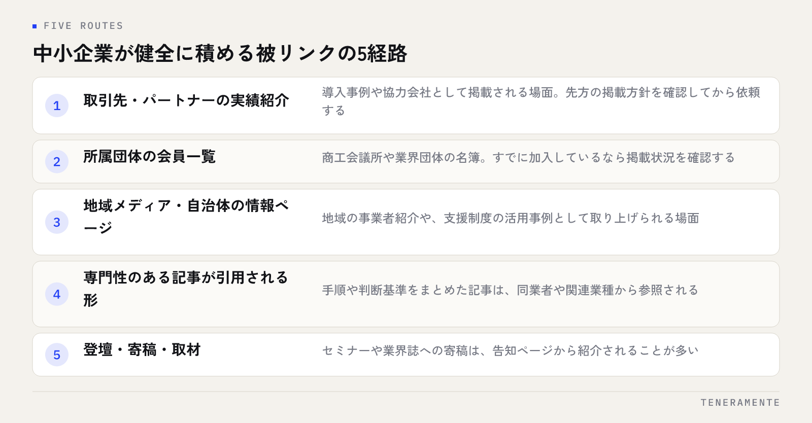

被リンクの増やし方を調べると、本数を増やす手段の話が先に出てきます。けれども被リンクは集めるものではなく、紹介される理由があって初めて付くものです。順番を逆にして本数から入ると、効かないリンクが並ぶか、最悪の場合は評価を下げる形になります。
📌 この記事の結論
被リンクで見られているのは本数ではなく、どこから、どんな文脈で紹介されているかです。中小企業が健全に積める経路は限られていますが、確実に積み上がります。買う・交換するという手段は、短期的にも長期的に見合いません。
01被リンクが評価される理由と、見られている中身
被リンクとは、他のサイトから自社サイトへ向けられたリンクのことです。検索エンジンはこれを「第三者からの参照」として扱います。自分で自分を良いと言うことは誰でもできますが、他人が紹介するには理由が必要だからです。
ここで見られているのは本数だけではありません。どんなサイトから、どんな文脈で紹介されているかが中身になります。業種の近いサイトや、地域の情報をまとめたサイトから、内容に触れた形でリンクされているほうが、無関係なサイトから大量に貼られるより意味を持ちます。
つまり被リンクは、サイトの評価を上げるための作業項目ではなく、紹介されるだけの内容があるかどうかの結果として表れる指標です。ここを押さえておくと、次に何をすべきかが絞れます。
02中小企業が健全に積める5つの経路
現実的に積める経路は、おおむね次の5つです。どれも今日から着手できますが、すぐに本数が増えるものではありません。

- 取引先・パートナーの実績紹介：導入事例や協力会社として掲載される場面。先方の掲載方針を確認してから依頼します
- 所属団体・業界団体の会員一覧：商工会議所や業界団体の名簿。すでに加入しているなら掲載状況を確認します
- 地域メディア・自治体の情報ページ：地域の事業者紹介や支援制度の活用事例として取り上げられる場面
- 専門性のある記事が引用される形：手順や判断基準をまとめた記事は、同業者や関連業種から参照されます
- 登壇・寄稿・取材：セミナーや業界誌への寄稿は、告知ページから紹介されることが多い経路です
この5つの共通点は、リンクが目的ではなく、事業上の接点の副産物として付くことです。だから続けられますし、不自然にもなりません。
03購入・相互リンクを避けるべき理由
リンクを売買する業者や、相互リンクを集めるサービスは今も存在します。これらを避けるべき理由は、倫理の話だけではありません。
Googleは、リンクの売買を検索結果を操作する行為として明確に禁じています。見つかった場合に起きるのは、そのリンクが無効になることだけではなく、サイト全体の評価が下がる可能性です。そして一度下がった評価を戻す作業は、積み上げる作業よりはるかに重くなります。
外したときに何も残らないものは、最初から積み上げになっていません。
加えて、買ったリンクは契約が切れれば消えます。毎月の費用を払い続けないと維持できない状態は、資産ではなく固定費です。同じ費用を記事の制作や事例の整理に充てたほうが、残るものが増えます。
「自然な被リンクを獲得します」という提案の見分け方
外注の提案を受けたときは、どこに掲載されるのかを事前に確認してください。掲載先を具体的に示せない、本数と金額だけで見積もりが組まれている、短期間での本数を約束している場合は、売買に近い形である可能性があります。掲載先の性質と、そこに載る理由を説明できる相手かどうかが判断の分かれ目です。
04紹介される前に、サイト側で整えておくこと
紹介したいと思われても、リンク先の中身が薄ければ紹介は起きません。先に整えておく点は3つです。
1つめは、紹介する単位のページがあることです。会社概要しかないサイトは、紹介しようとしても会社名を貼る以外にできません。サービスごと、手順ごとにページが分かれていれば、文脈に合う形で紹介されます。
2つめは、事実が確認できる形で書かれていることです。実績・対応範囲・進め方が具体的に書かれているページは、引用しやすくなります。逆に抽象的な表現だけのページは、紹介する側が説明に困ります。
3つめは、サイト内の導線が通っていることです。外部から1ページに入ってきた人が、次に見るページへ進めるかどうか。ここが切れていると、リンクが増えても問い合わせにはつながりません。内部の導線の作り方は内部リンクの貼り方に整理しています。
05掲載を依頼するときの進め方
取引先や団体に掲載を依頼する場面では、相手の手間を減らす形で持ちかけるかどうかで結果が変わります。
| 進め方 | 具体的にやること | 気をつける点 |
|---|---|---|
| 相手の掲載方針を先に確認 | 実績紹介のページがあるか、掲載の条件があるかを確認する | 方針がないところに無理に頼まない |
| 掲載用の情報をこちらで用意 | 会社名の表記、事業内容の短い説明、リンク先のURLをまとめて渡す | 先方が文章を書く手間をなくす |
| リンク先を適切なページにする | トップページではなく、紹介の文脈に合うページを指定する | 文脈と合わないページを指定しない |
| 相互掲載を条件にしない | こちらから紹介したい場合は、条件と切り離して行う | 交換を前提にすると不自然な形になる |
いちばん効くのは、こちらで文章まで用意して渡すことです。先方の担当者が手を動かす量が減るほど、掲載される確率は上がります。
06効果の確認と、数字の読み方
被リンクは増えてもすぐに順位に表れません。確認するときに見るのは次の3点です。
1つめは、どこからリンクされているかです。Search Consoleのリンクのレポートで、リンク元のサイトとリンクされているページが確認できます。本数の合計より、リンク元の性質を見てください。確認の手順はSearch Consoleの使い方にまとめています。
2つめは、そのリンクから人が来ているかです。検索評価のためだけに見ると判断を誤ります。実際に読まれているリンクは、掲載先の選び方が合っていた証拠になります。
3つめは、意図しないリンクが増えていないかです。身に覚えのないサイトから大量にリンクが付いている場合は、放置せず内容を確認します。多くは無視して問題ありませんが、明らかに不自然なものが続く場合は否認の手続きを検討します。
AI検索でも「どこから参照されているか」が効く
生成AIの回答で引用されるサイトも、第三者からどう参照されているかの影響を受けます。被リンクを集める作業としてではなく、参照されるだけの中身を持つページを作る方向で考えると、検索とAI検索の両方に同じ作業が効きます。考え方はAIに引用されるサイトの条件に整理しています。
被リンクは何本くらいあればよいのでしょうか？
無料で登録できるディレクトリサイトに一括登録するのは有効ですか？
以前に業者へ依頼して付けたリンクが残っています。どうすればよいですか？
07まとめ：本数ではなく、紹介される理由から積む
被リンクの増やし方は、集める手段を探すことではなく、紹介されるだけの内容と接点を作ることに尽きます。取引先の実績紹介、所属団体の名簿、地域メディア、引用される記事、登壇や寄稿。この5つを事業の中で回していけば、不自然な形にならずに積み上がります。
そして買ったリンクは残らず、積んだリンクは外れません。急いで本数を揃えたくなる場面もありますが、戻す作業の重さを考えれば、遅いほうの道が結果として早くなります。
TENERAMENTEなら、紹介される単位でページを分ける設計から、実績や進め方を事実として書ける形に整えるところまでご一緒できます。会社概要だけのサイトで紹介のしようがない状態であればホームページ・LP制作の段階から見直せますので、被リンクが思うように増えないという段階でもお問い合わせからお気軽にご相談ください。